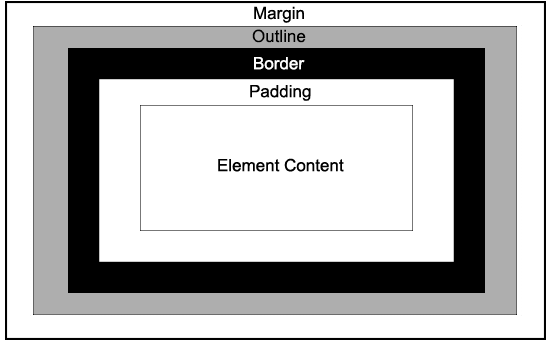

An outline is a line drawn outside the element's border.

An outline is a line that is drawn around elements, OUTSIDE the borders, to make the element "stand out".
CSS has the following outline properties:
The outline-style property specifies the style of the outline, and can have one of the following values:
A dotted outline
p.dashed {outline-style: dashed;}A dashed outline
p.solid {outline-style: solid;}A solid outline
p.double {outline-style: double;}A double outline
p.groove {outline-style: groove;}A groove outline. The effect depends on the outline-color value.
p.ridge {outline-style: ridge;}A ridge outline. The effect depends on the outline-color value.
p.inset {outline-style: inset;}An inset outline. The effect depends on the outline-color value.
p.outset {outline-style: outset;}An outset outline. The effect depends on the outline-color value.
The outline-color property is used to set the color of the outline.
The color can be set by: name, RGB, HEX, HSL and invert.
Performs a color inversion. This ensures that the outline is visible, regardless of color background.
.invertEx { border: 1px solid yellow; width: 200px; height: 100px;; outline-style: solid; outline-color: invert; margin: 30px; }
The outline-width property specifies the width of the outline, and can have one of the following values:
A thin outline.
p.ow2 { border: 1px solid black; outline-style: solid; outline-color: red; outline-width: medium; }A medium outline.
p.ow3 { border: 1px solid black; outline-style: solid; outline-color: red; outline-width: thick; }A thick outline.
p.ow4 { border: 1px solid black; outline-style: solid; outline-color: red; outline-width: 4px; }A 4px thick outline.
The outline-offset property adds space between an outline and the edge/border of an element. The space between an element and its outline is transparent.
.offsetEx { margin: 30px; background:yellowgreen; border: 1px solid black; outline: 1px solid red; outline-offset: 15px; }
A shorthand property for setting outline-width, outline-style, and outline-color in one declaration.
outline: outline-width outline-style outline-color | initial | inherit;
If outline-color is omitted, the color applied will be the color of the text.
Note: Note: Outlines differ from borders! Unlike border, the outline is drawn outside the element's border, and may overlap other content. Also, the outline is NOT a part of the element's dimensions; the element's total width and height is not affected by the width of the outline.
.outlineEx { border: 1px solid red; outline: 5px dotted green; }